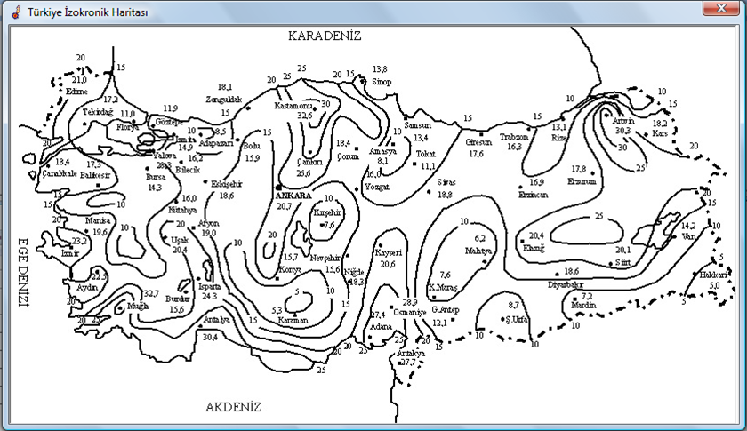

Risk Analiz Formu
Yapı
Çevre
Servis
Önlem
Kayıp I-II
Kayıp III-IV
Yapı
Yapı Boyutları:
Yapı/Çatı Malzemeleri:
Yapı Malzemesi:
Metal
Tuğla, Beton
Tutuşabilir
Çatı Malzemesi:
Metal
Kiremit
Yanıcı
Yapı Özellikleri:
Fiziksel Hasar veya Yangın Riski:
Değersiz, Yanıcı Olmayan
Normal Değerli, Yanıcı
Değerli Yanıcı
Çok Değerli, Yeri Doldurulamaz, Patlayıcı ve Yanıcı
Yapının Ekranlanması:
Ekransız
Ekranlı
Kabloların Ekranlanması:
Ekransız
Ekranlı
Çevre Koşulları
Konum Faktörü:
Yapı aynı yükseklikte veya daha yüksek yapılar arasında
Yüksekliği az yapılar arasında
Etrafında yapı yok ise
Bölgedeki en yüksek bina ise
Çevre Faktörü:
Sürekli Kullanımı Yok, Çevrede Değersiz
Sürekli Kullanımda, Çevrede Değersiz
Çevrede Değerli
Yıllık Gök Gürültülü Gün Sayısı:
Adana
Adıyaman
Afyon
Ağrı
Amasya
Ankara
Antalya
Artvin
Aydın
Balıkesir
Bilecik
Bingöl
Bitlis
Bolu
Burdur
Bursa
Çanakkale
Çankırı
Çorum
Denizli
Diyarbakır
Edirne
Elazığ
Erzincan
Erzurum
Eskişehir
Gaziantep
Giresun
Gümüşhane
Hakkari
Hatay
Isparta
Mersin
İstanbul
İzmir
Kars
Kastamonu
Kayseri
Kırklareli
Kırşehir
Kocaeli
Konya
Kütahya
Malatya
Manisa
K.maraş
Mardin
Muğla
Muş
Nevşehir
Niğde
Ordu
Rize
Sakarya
Samsun
Siirt
Sinop
Sivas
Tekirdağ
Tokat
Trabzon
Tunceli
Şanlıurfa
Uşak
Van
Yozgat
Zonguldak
Aksaray
Bayburt
Karaman
Kırıkkale
Batman
Şırnak
Bartın
Ardahan
Iğdır
Yalova
Karabük
Kilis
Osmaniye
Düzce
İzokronik Harita:

Servis Hatları
Enerji Hattı:
Yapıya Gelen Hattın Türü:
Lütfen Seçim Yapın
Option 1
Option 2
Kabloların Ekranlanması:
Lütfen Seçim Yapın
Option 1
Option 2
OG/AG Trafosunun Varlığı:
Lütfen Seçim Yapın
Option 1
Option 2
Diğer Yerüstü Servisleri:
İletken Servislerin Sayısı:
Yapıya Gelen Hattın Türü:
Lütfen Seçim Yapın
Option 1
Option 2
Diğer Yeraltı Servisleri:
İletken Servislerin Sayısı:
Yapıya Gelen Hattın Türü:
Lütfen Seçim Yapın
Option 1
Option 2
Koruma Önlemleri
Koruma Önlemleri:
Yıldırımdan Koruma Düzeyi:
Koruma Yok
Koruma Var
Yangından Korunma Türü:
Koruma Yok
Koruma Var
Aşırı Gerilimden Korunma Türü:
Koruma Yok
Koruma Var
Kayıp Türü I - II
Can Kaybı:
Yaşamsal Tehlikeler:
İnsansız Bina
Normal Kalabalık
Panik Riski Taşıyan, Tahliye Zorluğu Bulunan Bina
Yangından Can Kaybı:
İnsansız bina
Normal Kalabalığın Olduğu Bina
Yoğun Kalabalığın Olduğu Bina
Aşırı Gerilimden Can Kaybı:
Güvenlik Sistemi Yok
Güvenlik Sistemi Var
Genel Servis Kaybı:
Yangından Zarar Görecek Servis:
Servis Yok
Servis Var
Aşırı Gerilimden Zarar Görecek Servis:
Servis Yok
Servis Var
Kayıp Türü III - IV
Kültürel Miras Kaybı:
Yangın Nedeniyle Kültürel Miras Kaybı:
Kültürel Miras Değeri Yok
Kültürel Miras Değeri Var
Ekonomik Kayıp:
Ekonomik Zarar:
Ekonomik Zarar Tehlikesi Yok
Ekonomik Zarar Tehlikesi Var
Yangın Nedeniyle Ekonomik Kayıp:
Kayıp Riski Yok
Ticari Kayıp Riski Var
Demirbaş Kayıp Riski Var
Aşırı Gerilim Nedeniyle Ekonomik Kayıp:
Ev
İş Yeri
Kamu Binası
Adım/Dokunma Gerilimi Etkisi:
Çiftlik Hayvanı Yok
Çiftlik Hayvanı Var
Kabul Edilir Ekonomik Risk:
Lütfen Seçim Yapın
Option 1
Option 2
(* olan alanlar isteğe bağlı alanlardır.)
Devam